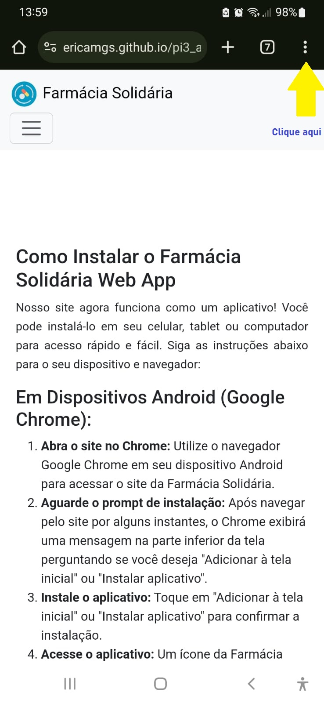
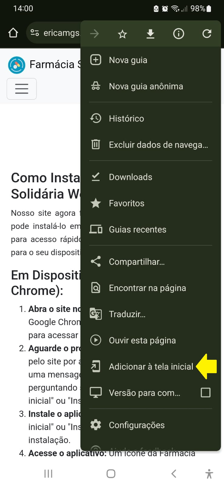
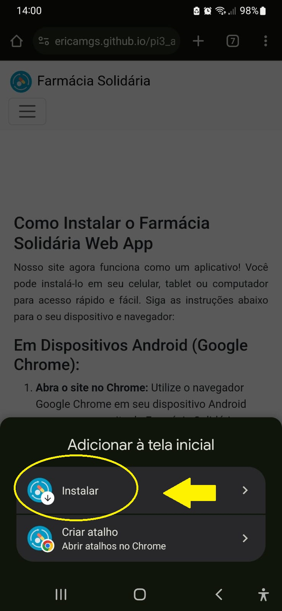
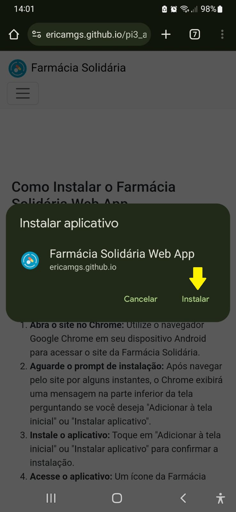
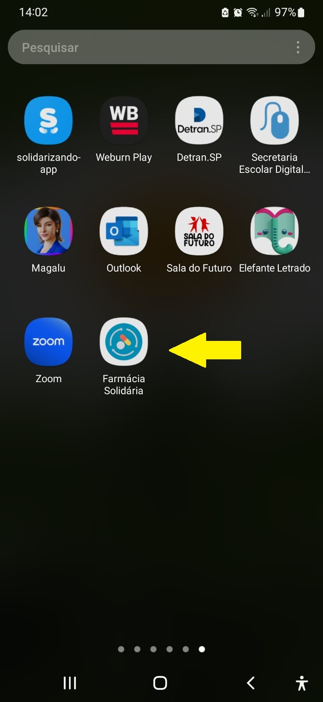

Nosso site agora funciona como um aplicativo! Você pode instalá-lo em seu celular, tablet ou computador para acesso rápido e fácil. Siga as instruções abaixo para o seu dispositivo e navegador:





Em Dispositivos Android (Google Chrome):
Abra o site no Chrome: Utilize o navegador Google Chrome em seu dispositivo Android para acessar o site da Farmácia Solidária.
Aguarde o prompt de instalação: Após navegar pelo site por alguns instantes, o Chrome exibirá uma mensagem na parte inferior da tela perguntando se você deseja "Adicionar à tela inicial" ou "Instalar aplicativo".
Instale o aplicativo: Toque em "Adicionar à tela inicial" ou "Instalar aplicativo" para confirmar a instalação.
Acesse o aplicativo: Um ícone da Farmácia Solidária será adicionado à tela inicial do seu Android. Toque nele para abrir o site como um aplicativo.
Em Dispositivos iOS (Safari):
Abra o site no Safari: Utilize o navegador Safari em seu iPhone ou iPad para acessar o site da Farmácia Solidária.
Toque no ícone de compartilhamento: Na parte inferior da tela, toque no ícone de "Compartilhar" (um quadrado com uma seta para cima).
Adicione à Tela de Início: Role a tela para cima e toque em "Adicionar à Tela de Início".
Acesse o aplicativo: Um ícone da Farmácia Solidária será adicionado à tela inicial do seu iOS. Toque nele para abrir o site como um aplicativo.
Em Computadores (Chrome, Firefox, Edge):
Abra o site em um navegador compatível: Utilize um navegador como Google Chrome, Mozilla Firefox ou Microsoft Edge para acessar o site da Farmácia Solidária.
Opção de instalação na barra de endereço: Navegadores de desktop geralmente exibem um ícone de instalação (um "+" dentro de um círculo ou um ícone de computador com uma seta para baixo) na barra de endereço, próximo ao endereço do site.
Instale o aplicativo: Clique no ícone de instalação e siga as instruções na tela para instalar o PWA.
Acesse o aplicativo: O PWA será instalado em seu sistema operacional e poderá ser acessado como um aplicativo comum.
Observações:
A aparência e o comportamento da instalação podem variar ligeiramente dependendo da versão do navegador e do sistema operacional.
Certifique-se de que seu site esteja rodando em HTTPS (a conexão deve ser segura e exibir um cadeado na barra de endereço do navegador). O Service Worker, que permite a instalação e o funcionamento offline, requer HTTPS.